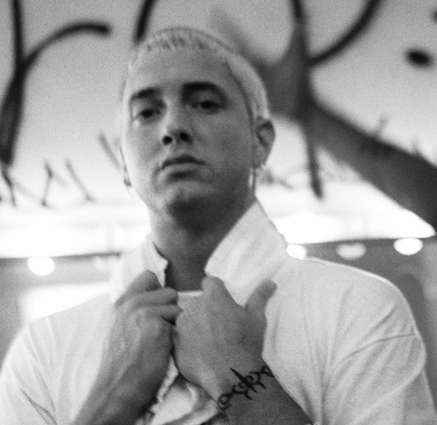

Marshal "Eminem" Mathers
One of if not the best rapper to have ever lived

Eminem in backstage in Munich/Germany 31.10.1999
- October 17, 1972: Born in St. Joseph, Missouri, U.S.
- 1996: Release of his debut album: Infinite
- 1997: Signed with Dr.Dre's Aftermath Entertainment
- 1999: Release of his second album: The Slim Shady LP
- 2000-2002: Release of 2 albums, The Marshal Mathers LP and The Eminem Show were worldwide successes and were both nominated for the Grammy Award for Album of the Year. As a result of being a leading figure in a form of black music and being credited for popularizing hip hop to a Middle American audience, Eminem was subject to comparisons with Elvis Presley at the time.[3] After the release of what was considered to be his final album.
- 2004: Release of his new album Encore.
- 2005: Eminem struggled in this part of his life due to his presectiption drug addiction.
- 2009: Eminem Re-entered the music industry clean and free from his drug addiction, releasing his new album Relapse later that year.
- 2010: Release of his new album Recovery, both albums won the Grammy Awards for Best Rap Album, Recovery also being the best selling album of the year 2010, making it Eminem's second album after The Eminem Show to be a best seller worldwide.
- The following years, he continued to make music up to this point, 2020, the albums are The Marshall Mathers LP 2, Revival, Kamikaze and Music to Be Murdered By.